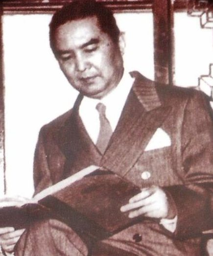
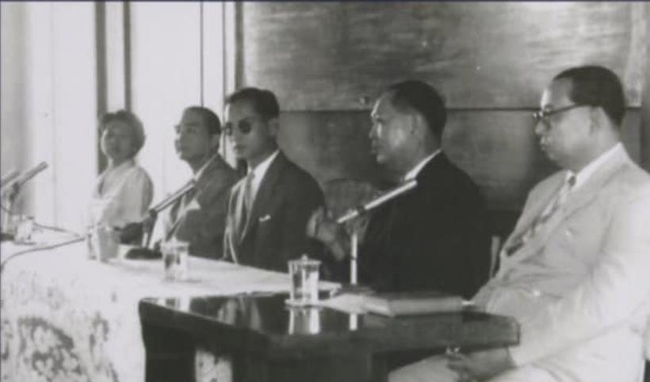
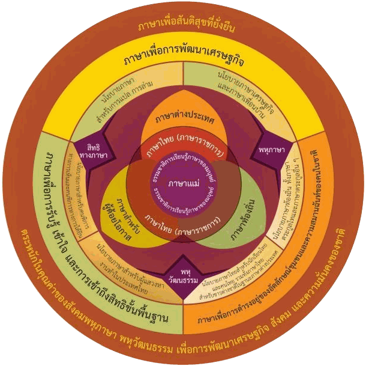

บทความโดยนายกราชบัณฑิตยสภา
พันธกิจของราชบัณฑิตยสภาด้านภาษาไทย
โดย ศาสตราจารย์เกียรติคุณ นายแพทย์สุรพล อิสรไกรศีล นายกราชบัณฑิตยสภา
This talk is available in Thai only.
จากวันที่ราชบัณฑิตยสภาก่อตั้งขึ้นเมื่อ พ.ศ. ๒๔๖๙ ถึงพจนานุกรมฉบับใหม่ในปีที่ครบ ๑๐๐ ปี — งานด้านภาษาไทยคือหัวใจของราชบัณฑิตยสภามาโดยตลอด

ความเป็นมา
ราชบัณฑิตยสภา
๑๐๐ ปี
๑๙ เมษายน ๒๔๖๙
พระบาทสมเด็จพระปกเกล้าเจ้าอยู่หัว รัชกาลที่ ๗ โปรดเกล้าฯ ประกาศตั้งราชบัณฑิตยสภา
๒๔๗๖
ตราพระราชบัญญัติว่าด้วยราชบัณฑิตยสถาน
๑๖ มิถุนายน ๒๔๗๗
ประชุมภาคีสมาชิกครั้งแรก
๓๐ กันยายน ๒๔๘๕
แต่งตั้งราชบัณฑิต จำนวน ๕๑ คน
๑๓ กุมภาพันธ์ ๒๕๕๘
พระราชบัญญัติราชบัณฑิตยสภา พ.ศ. ๒๕๕๘
ปัจจุบัน
ตั้งแต่ พ.ศ. ๒๔๗๗
งานด้านภาษาไทย ๖ ด้าน
งานที่ราชบัณฑิตยสภาทำต่อเนื่องมากว่า ๙๐ ปี และเป็นรากฐานของภาษาไทยมาตรฐานที่ใช้กันในทุกวันนี้
ประกวดแต่งหนังสือสอนพระพุทธศาสนาแก่เด็ก
จัดเป็นประจำทุกปี
ชำระพจนานุกรม
ปรับปรุงพจนานุกรมฉบับทางการให้ทันกับภาษาที่ใช้จริง
สารานุกรม
รวบรวมความรู้สาขาต่าง ๆ เป็นภาษาไทย
บัญญัติศัพท์ภาษาไทย
คิดคำไทยขึ้นใช้แทนศัพท์ภาษาต่างประเทศ
อักขรานุกรมภูมิศาสตร์
กำหนดการเขียนชื่อทางภูมิศาสตร์ให้เป็นแบบเดียวกัน
หลักเกณฑ์การถอดอักษรไทยเป็นอักษรโรมัน
มาตรฐานการเขียนคำไทยด้วยตัวอักษรโรมัน

ศัพท์บัญญัติพระองค์วรรณ
พระเจ้าวรวงศ์เธอ พระองค์เจ้าวรรณไวทยากร กรมหมื่นนราธิปพงศ์ประพันธ์
นายกราชบัณฑิตยสถาน พ.ศ. ๒๕๑๒–๒๕๑๖ (รักษาการ) และ พ.ศ. ๒๕๑๖–๒๕๑๘
คำที่ทรงบัญญัติขึ้นแทนศัพท์ภาษาอังกฤษ และยังใช้กันอยู่ทุกวันนี้
- สื่อสารมวลชนmass communication
- ปฏิรูปreform
- ปฏิวัติrevolution
- รัฐธรรมนูญconstitution
- นวัตกรรมinnovation
- ประชาธิปไตยdemocracy
- มลพิษpollution
- ฯลฯและอีกหลายคำ
วิสัยทัศน์
สถานที่บำรุงสรรพวิชาขุมปัญญาของชาตินักปราชญ์ของพระราชาที่พึ่งพาของแผ่นดิน
พันธกิจ ๔ ประการ
ค้นคว้าวิจัยเพื่อเผยแพร่
ศึกษาค้นคว้าทางวิชาการแล้วนำออกเผยแพร่
ส่งเสริมแลกเปลี่ยนความรู้
เปิดเวทีแลกเปลี่ยนความรู้กับสังคม
พัฒนาอนุรักษ์
อนุรักษ์ภาษา ศิลปะ และวัฒนธรรมไทย
บริการวิชาการ
ให้คำปรึกษาทางวิชาการแก่ประชาชน
วันภาษาไทยแห่งชาติ
๒๙ กรกฎาคม

ที่มาของวันภาษาไทยแห่งชาติ จากกระแสพระราชดำริเรื่องปัญหาการใช้คำไทย สู่ประกาศของรัฐบาล
๒๙ กรกฎาคม ๒๕๐๕
พระบาทสมเด็จพระเจ้าอยู่หัว รัชกาลที่ ๙ เสด็จพระราชดำเนินไปพระราชทานกระแสพระราชดำริ เรื่อง ปัญหาการใช้คำไทย ในการประชุมทางวิชาการของชุมนุมภาษาไทย คณะอักษรศาสตร์ จุฬาลงกรณ์มหาวิทยาลัย
ต่อมา
คณะกรรมการรณรงค์เพื่อภาษาไทย จุฬาลงกรณ์มหาวิทยาลัย เสนอให้รัฐบาลประกาศให้วันที่ ๒๙ กรกฎาคมของทุกปีเป็นวันภาษาไทยแห่งชาติ
๑๓ กรกฎาคม ๒๕๔๒
คณะรัฐมนตรีมีมติกำหนดให้วันที่ ๒๙ กรกฎาคมของทุกปีเป็นวันภาษาไทยแห่งชาติ
๒๐ กรกฎาคม ๒๕๔๒
ประกาศสำนักนายกรัฐมนตรี เรื่อง วันภาษาไทยแห่งชาติ
เป้าหมายในการอนุรักษ์ภาษาไทย
ให้คนไทยใช้ รู้ และภูมิใจในภาษาไทย
เป้าหมาย ๔ ขั้น ตั้งแต่การใช้ภาษาให้ถูกต้อง ไปจนถึงให้ภาษาไทยเป็นที่ยอมรับในระดับนานาชาติ
- ใช้ถูกคนไทยใช้ภาษาไทยอย่างถูกต้อง
- รู้มากขึ้นคนไทยมีความรู้เรื่องภาษาไทยมากขึ้น
- ภูมิใจคนไทยภาคภูมิใจในภาษาของตน
- ยอมรับภาษาไทยเป็นที่ยอมรับในนานาชาติ
บทบาทของราชบัณฑิตยสภา
๘ ด้านในการอนุรักษ์ภาษาไทย
ส่งเสริมการใช้ภาษาไทย
- กิจกรรมส่งเสริมการอ่านและการเขียน
- การประกวดด้านภาษาไทย
- สื่อการเรียนการสอนภาษาไทย
- เผยแพร่ความรู้ภาษาไทย
กำหนดมาตรฐานภาษาไทย
- พจนานุกรม ฉบับราชบัณฑิตยสภา
- หลักเกณฑ์การใช้ภาษา
บัญญัติศัพท์ใหม่
- หลักเกณฑ์การถอดอักษร
อนุรักษ์ภาษาไทย
- รวบรวมอักษรโบราณ
- อนุรักษ์ภาษาถิ่น
- ศึกษาค้นคว้าและวิจัย
ร่วมมือกับหน่วยงานต่าง ๆ
- หน่วยงานทั้งไทยและต่างประเทศ
- รายการโทรทัศน์ เว็บไซต์ และแอปพลิเคชันสอนภาษาไทย
- อบรมครูและพัฒนาหนังสือเรียน
- ส่งเสริมการแปลหนังสือ
เทคโนโลยีกับภาษาไทย
- ศึกษาผลกระทบของเทคโนโลยีต่อภาษา
- พัฒนาเทคโนโลยีเพื่อการอนุรักษ์
เผยแพร่หนังสือและเอกสารวิชาการ
ให้คำปรึกษาการใช้ภาษาไทย
- แนะนำการใช้ภาษาไทยที่ถูกต้อง
สำนักงานราชบัณฑิตยสภา
โครงการส่งเสริมภาษาไทย
- โครงการส่งเสริมความรู้ในการใช้ภาษาไทย
- โครงการ รู้ รัก ภาษาไทย
- โครงการจัดแข่งขันและคัดเลือกผู้ใช้ภาษาไทยดีเด่น
- โครงการจัดการประกวดแข่งขันคัดลายมือสำหรับเยาวชน
- โครงการจัดทำพจนานุกรมภาษาไทยถิ่น ๓ ภาค
- โครงการพัฒนาทักษะการใช้ภาษาไทย
- โครงการจัดทำวีดิทัศน์ภาษามือไทย
- โครงการอบรมหลักเกณฑ์การทับศัพท์

แผนปฏิบัติการด้านนโยบายภาษาแห่งชาติ (พ.ศ. ๒๕๖๔–๒๕๖๕)
“ภาษาเพื่อสันติสุขที่ยั่งยืน”
กรอบแนวคิดหลักในการพัฒนาแผนปฏิบัติการฯ ประกอบด้วยหลักการสำคัญ ๓ ประการ
- ๑ภาษาเพื่อการดำรงอยู่ของอัตลักษณ์ชุมชนและความสมานฉันท์ของคนในชาติ
- ๒ภาษาเพื่อการรับรู้ เข้าใจ และการเข้าถึงสิทธิขั้นพื้นฐาน
- ๓ภาษาเพื่อการพัฒนาเศรษฐกิจ
ประเด็นที่สำคัญที่สุด คือ การใช้ภาษาแม่เป็นรากฐานของการพัฒนาการเรียนรู้ภาษาไทยที่เป็นภาษาราชการ และเชื่อมโยงไปสู่การเรียนรู้ภาษาต่างประเทศ ตามธรรมชาติการเรียนรู้ภาษาของมนุษย์ โดยไม่ละเลยการใช้ภาษาท้องถิ่นและภาษาสำหรับผู้ด้อยโอกาส
ครบ ๑๐๐ ปี ราชบัณฑิตยสภา
พจนานุกรม ฉบับราชบัณฑิตยสภา พ.ศ. ๒๕๖๙
พจนานุกรมฉบับใหม่ที่เป็นครั้งแรก ๒ ประการ และจัดทำขึ้นในวาระสำคัญ ๒ วาระ
ครั้งแรก
ฉบับแรกในชื่อ “ราชบัณฑิตยสภา”
เดิมใช้ชื่อว่า “พจนานุกรม ฉบับราชบัณฑิตยสถาน”
ฉบับแรกที่ชำระครบทุกหมวดอักษร
พิจารณาชำระต่อเนื่องจนถึงหมวดอักษร ฮ
เนื่องในวาระ
เฉลิมพระเกียรติ
พระบาทสมเด็จพระเจ้าอยู่หัว ทรงครองราชย์ครบ ๑๐ ปี
ฉลองครบรอบ ๑๐๐ ปี
เนื่องในโอกาสที่ราชบัณฑิตยสภามีอายุครบ ๑๐๐ ปี